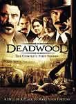
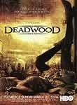
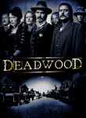

What is this site?
Stephen's Profile
Browser Extension
Stephen Klancher
Recent
Overall
Year Overview
Series
Lists
Deadwood
List contains: 36 items, 0.6 hours.
Seasons:
1
|
2
|
3
|
Title Search (4+ characters):
Group:
None
Example Group: Me and Stephen
Who's seen it:
No filter
Everyone
No One
Anyone
Anyone Has Not
Who's commented:
No filter
Everyone
No One
Anyone
Anyone Has Not
Netflix:
No Filter
Available for Instant Watch
Netflix Link Known
Netflix Link Unknown
Missing Data:
No Filter
Runtime
Season
Release Year (YYYY) or Decade (YYYx):
Sort:
Normal
Newest Episodes First
Episodes in Order
Recently Watched First
Watched in Order
Newest Releases First
Releases in Order
Stephen Klancher
...has seen 0
...has not seen 0.6 hours
Timeline

Season 1
Deadwood (2004)
Airs on 2004-03-21
S1 - E1 of
Deadwood
Stephen Klancher
:
Deep Water
Airs on 2004-03-28
S1 - E2 of
Deadwood
Stephen Klancher
:
Reconnoitering the Rim
Airs on 2004-04-04
S1 - E3 of
Deadwood
Stephen Klancher
:
Here Was a Man
Airs on 2004-04-11
S1 - E4 of
Deadwood
Stephen Klancher
:
The Trial of Jack McCall
Airs on 2004-04-18
S1 - E5 of
Deadwood
Stephen Klancher
:
Plague
Airs on 2004-04-25
S1 - E6 of
Deadwood
Stephen Klancher
:
Bullock Returns to the Camp
Airs on 2004-05-02
S1 - E7 of
Deadwood
Stephen Klancher
:
Suffer the Little Children
Airs on 2004-05-09
S1 - E8 of
Deadwood
Stephen Klancher
:
No Other Sons or Daughters
Airs on 2004-05-16
S1 - E9 of
Deadwood
Stephen Klancher
:
Mister Wu
Airs on 2004-05-23
S1 - E10 of
Deadwood
Stephen Klancher
:
Jewel's Boot Is Made for Walking
Airs on 2004-06-06
S1 - E11 of
Deadwood
Stephen Klancher
:
Sold Under Sin
Airs on 2004-06-13
S1 - E12 of
Deadwood
Stephen Klancher
:

Season 2
A Lie Agreed Upon: Part I
Airs on 2005-03-06
S2 - E1 of
Deadwood
Stephen Klancher
:
A Lie Agreed Upon: Part II
Airs on 2005-03-13
S2 - E2 of
Deadwood
Stephen Klancher
:
New Money
Airs on 2005-03-20
S2 - E3 of
Deadwood
Stephen Klancher
:
Requiem for a Gleet
Airs on 2005-03-27
S2 - E4 of
Deadwood
Stephen Klancher
:
Complications
Airs on 2005-04-03
S2 - E5 of
Deadwood
Stephen Klancher
:
Something Very Expensive
Airs on 2005-04-10
S2 - E6 of
Deadwood
Stephen Klancher
:
E.B. Was Left Out
Airs on 2005-04-17
S2 - E7 of
Deadwood
Stephen Klancher
:
Childish Things
Airs on 2005-04-24
S2 - E8 of
Deadwood
Stephen Klancher
:
Amalgamation and Capital
Airs on 2005-05-01
S2 - E9 of
Deadwood
Stephen Klancher
:
Advances, None Miraculous
Airs on 2005-05-08
S2 - E10 of
Deadwood
Stephen Klancher
:
The Whores Can Come
Airs on 2005-05-15
S2 - E11 of
Deadwood
Stephen Klancher
:
Boy-the-Earth-Talks-To
Airs on 2005-05-22
S2 - E12 of
Deadwood
Stephen Klancher
:

Season 3
Tell Your God to Ready for Blood
Airs on 2006-06-11
S3 - E1 of
Deadwood
Stephen Klancher
:
I Am Not the Fine Man You Take Me For
Airs on 2006-06-18
S3 - E2 of
Deadwood
Stephen Klancher
:
True Colors
Airs on 2006-06-25
S3 - E3 of
Deadwood
Stephen Klancher
:
Full Faith and Credit
Airs on 2006-07-02
S3 - E4 of
Deadwood
Stephen Klancher
:
A Two-Headed Beast
Airs on 2006-07-09
S3 - E5 of
Deadwood
Stephen Klancher
:
A Rich Find
Airs on 2006-07-16
S3 - E6 of
Deadwood
Stephen Klancher
:
Unauthorized Cinnamon
Airs on 2006-07-23
S3 - E7 of
Deadwood
Stephen Klancher
:
Leviathan Smiles
Airs on 2006-07-30
S3 - E8 of
Deadwood
Stephen Klancher
:
Amateur Night
Airs on 2006-08-06
S3 - E9 of
Deadwood
Stephen Klancher
:
A Constant Throb
Airs on 2006-08-13
S3 - E10 of
Deadwood
Stephen Klancher
:
The Catbird Seat
Airs on 2006-08-20
S3 - E11 of
Deadwood
Stephen Klancher
:
Tell Him Something Pretty
Airs on 2006-08-27
S3 - E12 of
Deadwood
Stephen Klancher
:
Watched an episode not known by IMDb?
Season:
-
Episode:
Date:
Comment: